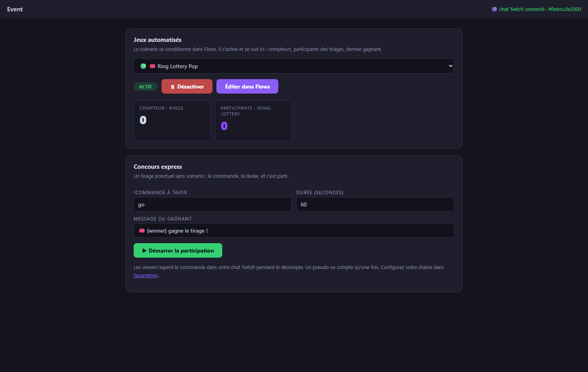
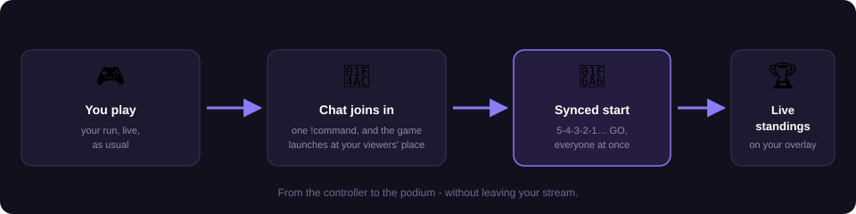
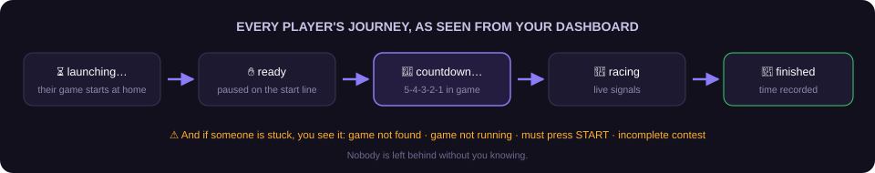

Twitch integration
Retro Creator reads your Twitch chat without any key, token or password: it joins your channel anonymously, in read-only mode. It cannot write anything, so there is zero risk for your channel.
1. Plug your channel
- Open File → Settings…
- In the Twitch card, type your channel name (e.g.
my_channel) and save. - The Event tab header confirms the state:
🟣 Twitch chat connected · #my_channel.
From that moment, every chat message becomes an event in the pipeline:
| Event | When |
|---|---|
| Twitch chat message | a viewer writes anything |
| Twitch chat !command | a viewer types a !command (e.g. !ring 3) |
They appear in the Live view, in the Monitor, and can trigger Flows like any game event. The Designer also gets bindings: last viewer, last message.
2. Run a chat contest (no configuration)

Open Mode → Event → Quick contest:
- Choose the !command viewers must type (the slug, e.g.
!go), the duration, and the winner message. - Press ▶ Start participation — the countdown runs, the participant list grows in real time (one entry per viewer, even if they spam), with a live counter.
- At zero, a winner is drawn: big announcement on screen and a popup on your OBS overlay.
3. Automate contests with Flows (e.g. Ring Lottery)
For recurring mechanics, condition everything in Flows and pilot it from Event:
- Widgets → Ring Lottery Pop → Edit creates the ready-made flow:
- every ring collected in-game increments a counter;
- every viewer typing
!ringjoins the draw pool; - at 100 rings, a winner is drawn and announced.
- Change the slug by editing the rule's If condition
(
chat command equals ring→ put whatever you want). - In Event → Automated games, select the flow, press ▶ Activate, and watch the dashboard: ring counter, participants joining live, last winner.
What about writing to the chat?
Announcing winners in the chat (not just on the overlay) requires a Twitch authorization (OAuth). This is on the roadmap; today all announcements happen on-screen, which is what viewers watch anyway.
4. Live Contest: your viewers play at home
The Live Contest goes beyond chat: your viewers launch the same game at home (RetroBat + APIExpose) and their real game data streams back live — first to 10 rings, best score, time attack… Everything is orchestrated automatically: game launch, simultaneous start, scores, results.

Under the hood — how objectives stay fair
A contest objective is bound to a real gameplay signal of the selected game (the same normalized events that power your overlays). When the contest is created, the game's exact event definition fingerprint travels with it, so every participant is measured on the same signals, on the same game version — and the signal picker only offers moments that can actually fire.
One-time setup: the streamer token
- File → Settings → NelfeTech → Get my token (Twitch login): log in with your Twitch account.
- Click 📥 Send to Retro Creator: the token registers itself (a ✅ confirms it on both sides, 🗑 button to delete it).
Create and run a contest
In Mode → Event, click ＋ New event and pick the event type — 🏆 Live Contest (viewers play at home), 🤖 Automated game (a Flows scenario living during your run) or 🎟️ Quick contest (a one-off chat draw). Choose Live Contest, with a game selected in RetroBat:
- Title, !command, Mode (race, best score, time attack, survival), Game signal — read straight from the current game's .MEM file — and Target.
- Who can join: all viewers, subscribers only, or through a channel-point reward.
- Bot message: the text the bot posts in chat before the link (e.g. 🎮 Click here to play ➜), and Player brief: your objective sentence, shown big on every player's screen (e.g. Collect 20 rings as fast as you can!).
- 🧪 Test round (optional): trial scores are wiped when you open for real, participants stay enrolled.
- ▶ Open registrations: every viewer typing the !command gets a short personal link from the bot in chat. They confirm with Twitch — and that's it: their game launches at home automatically.
What the viewer experiences (all automatic)
- They confirm → their APIExpose takes over: the game launches, an on-top window says "Press START!".
-
As soon as their run begins it is paused — they are ready. Your dashboard shows "ready: x / y" live and flags whoever is stuck (⚠ game not found, ⚠ must press START…).

3. 🏁 Start: a big in-game 5-4-3-2-1 countdown, then GO — every pause lifts at the same millisecond. 4. In race mode, the first player to reach the target sees their game pause: their time is recorded, "🏁 Target reached!", and RetroArch closes by itself — no need to wait for you to close the contest. 5. ⏹ Close: standings frozen (race shows times), CSV export, a stable JSON results feed for your overlays, ↻ Run again.
Viewer side: a single thing to do
Install RetroBat + the APIExpose plugin and enable GAME EVENTS MANAGER → ENABLE LIVE CONTEST in the RetroBat menus. The step-by-step guide to share: the platform's Guide page (linked from every enrolment page).
Recommended: make the bot a moderator
Type /mod RetroCreatorBot once in your chat: many channels block
links from non-moderators. The bot only joins your chat during
registrations, and leaves afterwards.